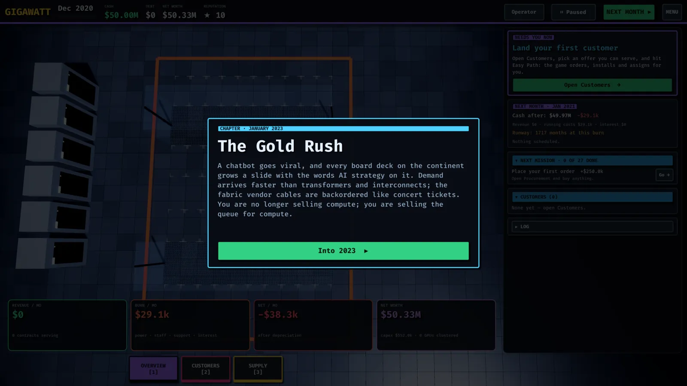
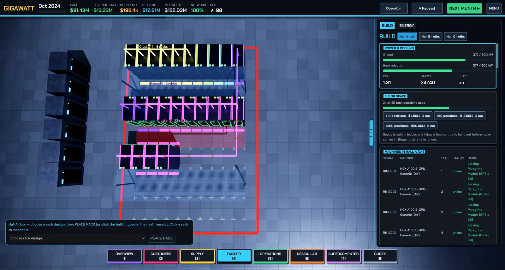

Your first hour
A step-by-step walkthrough from an empty hall to your first revenue, following the Learning path missions in order.
The Missions panel on the Overview screen always shows your next three missions with a Go → button that jumps to the right screen. Each completed mission pays a cash reward and teaches one lesson. This page walks the opening ten in order. If you ever feel stuck, the Easy Path on the Customers screen can order, install, deploy and assign a contract for you.

1 · Place your first order (Procure)
Open Supply → Procure. The guided planner walks you through: pick a platform (a GPU generation, pre-engineered), say how many accelerators you want, choose how to buy — DIY (cheapest, you integrate), an OEM integrated rack, or turnkey (priciest, fastest) — check your hall can feed and cool it, then order from the bill of materials. The lesson: hardware has lead times and, for GPUs, allocation. Parts arrive months later, so order early.

2 · Expand your cooling plant (Build)
Open Facility → Build. Under Buy plant, buy a CRAH (air handler) sized for your hall's cooling class, wait for it to arrive, then Install 1 from inventory. Every watt of IT power becomes a watt of heat, and cooling capacity — not floor space — caps most AI halls. See Power and cooling.
3 · Design a server tray (Design Lab)
Open Design Lab → Tray bench. Pick an 8-GPU chassis, hit Auto-fill to populate every required socket, then fix anything the live validation flags. The Sizing advisor checks PSU capacity and N+1 redundancy, PCIe lanes versus CPU count, NIC bandwidth per GPU, and memory. Save the tray. Details in Servers and racks.
4 · Design a rack (Design Lab)
Switch to the Rack bench. Stack your trays plus a leaf (top-of-rack) switch into a 42U elevation within the rack's kW limit — four 8-GPU H100 trays at roughly 10 kW each already push 40 kW. Set the cooling interface, clear the validation errors, and save the rack design.
5 · Place a rack on the floor (Warehouse)
Open Supply → Warehouse. Your rack design lists exactly which parts are missing; use order all missing to buy them in one go. When everything is in the warehouse and the hall has power, cooling and a free slot, press DEPLOY 1 (or pick the design on the Build screen and click an empty floor slot).
6 · Get a rack online
Racks take months to install and commission. Press Space to advance months and watch the Next month preview on the Overview screen — it tells you what is arriving, what starts burn-in and what goes online. Commissioning (power-on, firmware, burn-in) is what finds dead GPUs before your customers do; you control its length in Operations.

7 · Build a cluster (Supercomputer)
Open Supercomputer, select your online rack(s), press Auto-design for TRAINING (or the cheaper inference fabric), check the What can this machine do? table, and BUILD CLUSTER. A cluster is racks plus a network fabric — see Networking and clusters.
8 · Land your first contract (Customers)
Open Customers and read the verdict on each offer: CAN SERVE NOW, CAN BUILD IN TIME, or NEED MORE / DIFFERENT HARDWARE. If you're ready, SIGN & START SERVING and assign your cluster. If not, the What you need to buy box lists the exact racks to order — or press EASY PATH and the game does the whole pipeline for you. You can also serve straight from racks without clustering. Inference is memory-bandwidth-bound; training is compute- and network-bound — match hardware to workload.
9 · Sign a power contract (Energy)
Open Facility → Energy. Compare plant offers (solar, gas, hydro, nuclear, grid) and sign a PPA roughly matched to your draw. Take-or-pay means you pay for committed megawatts whether you use them or not, so don't over-commit. More in Energy and the spot market.
10 · Earn revenue
Advance a month with an active contract. Revenue minus power, staff, support, depreciation and interest is your profit — the plaques at the bottom of the Overview screen show revenue, burn and net per month. Utilization is everything: an idle rack still costs money, so put spare capacity on the spot market.
After the first hour
The Learning path continues: go liquid-cooled with a DLC hall and a 120 kW-class rack, run a 256-accelerator supercomputer, deploy a 72-GPU NVLink domain, then the long campaign goals (thousands of accelerators, halls, net worth). See Strategy tips.
Found a mistake or something missing? Edit this page on GitHub or ask in Discussions.